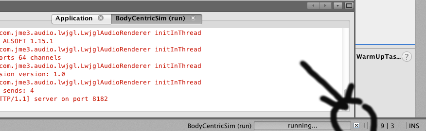
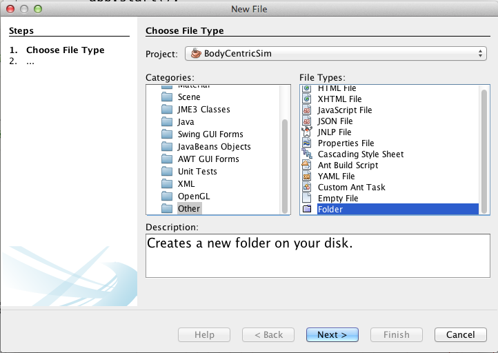
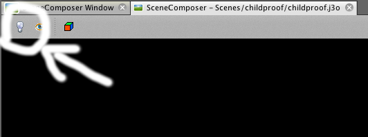
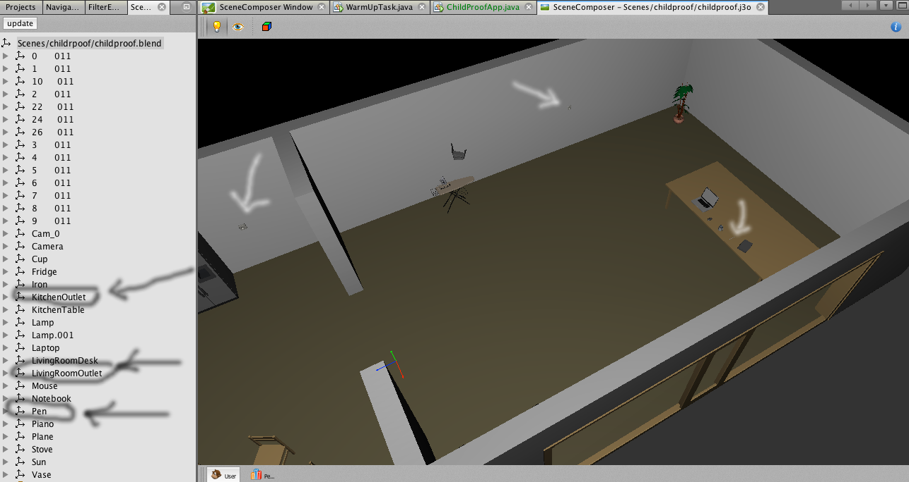
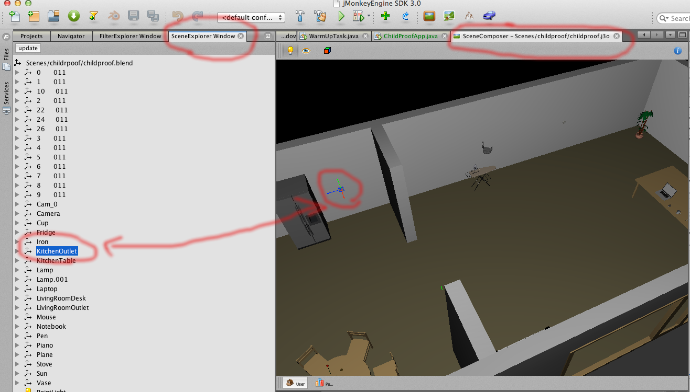
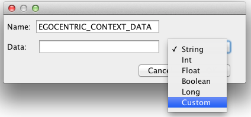
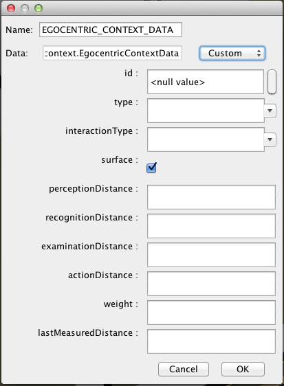

Useful Tips
NB: After you exit or close the APP, the process running it might get stuck. Identify the following icon in the JMonkeyEngine IDE and press the force close button. 
Link to the ContextClient.
Task 2 - Child Monitoring System
The hypothetical problem we are facing as part of this task is that families cannot make their homes secure enough for their children. To provide a solution for this problem, there's a need for a system to constantly monitoring the objects a child should keep away from and should not be interacting with. Based on this context information, we can further build various software service to secure the house from the child's actions. One example of such service is the "Secure Outlets Service" (SOS). This service has to detect whenever a child is approaching an outlet with a small object, in which case it should shut down the electricity switch for outlets, preventing the child from the possibly of getting electrocuted.
For this task, please imagine yourself as being the researcher in charge to develop this system. Once again, you decide to design your system based on the egocentric interaction paradigm, as it can categorizes all the objects of interest around the human agent. In order to validate your design, you decide to simulate the system first.
In this exercise, you will be provided with the virtual model of the simulated environment in the blender format. Blender is a free and open-source software for creating 3D virtual models, animations and more.
Using the EgoSim framework, you will augment this model to monitor the objects required by your system. Afterwards, based on the frameworks API, you will write the condition for the SOS to shut the electricity down in the outlets.
Prerequisites
To get started, you will need to get your hands on 3 gems:
- 1. The JMonkeyEngine development platform, a NetBeans based IDE.
- 2. The EgoSim framework from my git repository.
- 3. The simulated environment's model.
Unzip the JMonkleyEngine Platform and run it. On the first run you will be asked to configure the working directory. Please do so!
From the File menu, select the "Import Project > From ZIP..." option. Point to the location of the EgoSim zip you've recently downloaded. This will import the BodyCentricSim project in your workspace.
Importing the environment model
Next, you will import the environment model into the project. Expand the "Assets/Scenes" folder. Create a new folder, "Scenes/childproof". To create a new folder, from the "File" menu select the "New File..." option. In the dialog, select "Other" and "New Folder", as depicted in the picture.  Copy the "childproof.blend" file into this folder. Once you see the file in the IDE, right click it and "Convert to j3o Binary". This convert it to JMonkey format.
Setting up the simulation
In the "Source Packages" folder, under the "dk.itu.bodysim" package, create a new class, ChildProofApp. Make this class extend EgocentricApp. In the implementation of the "createEnvironmentScene", simply write:
return new GenericEnvironment("Scenes/childproof/childproof.j3o", "ChildProof", assetManager);
Next, create a main method for your class:
public static void main(String[] args) {
ChildProofApp app = new ChildProofApp();
app.start();
}
The ChildProofApp class should look similar to:
package dk.itu.bodysim;
import com.jme3.scene.Node;
import dk.itu.bodysim.environment.GenericEnvironment;
public class ChildProofApp extends EgocentricApp {
@Override
protected Node createEnvironmentScene() {
return new GenericEnvironment("Scenes/childproof/childproof.j3o", "ChildProof", assetManager);
}
public static void main(String[] args) {
ChildProofApp app = new ChildProofApp();
app.start();
}
}
Now your set! Inside the ChildproofApp hit the SHIFT+F6 key combination. In the settings window just start it up with the default configuration. This will start up the simulation! In here you can control the avatar, move around the environment, NOT walk through walls and objects. The EgoSim took care of this for you.
You will notice that you see the environment from a child's perspective: the height of the agent is smaller.
At this point, you notice the agent can't interact with any objects. That's because none of them have been augmented with context data! You can notice this by opening, on your second display, the ContextClient in a browser.
Identifying objects to monitor
In the assets, right click the "Scenes/childproof/childproof.j3o" file and select "Edit in SceneComposer". To see the environment, you'll have to "turn on the lights".  To interact with the scene composer, you can: scroll the wheel to zoom-in/zoom out, hold the wheel clicked and move the mouse to rotate, hold the wheel clicked with the SHIFT button pressed and move the mouse to drag the scene.
The objects you want to track in this scenario are the Outlets and all the small objects that might be inserted into them; in this case, the pen on the living room table.  Identify the objects in the "SceneExplorer Window" on the left or by RIGHT-CLICKing on them in the "SceneComposer". Either way, as you identify them, they get highlighted in the "SceneComposer" on the right. 
To augment the objects with context data:
- 1. Right click the object in the "SceneComposer Window" and select the "Add User Data"
-
2. In the name field enter enter EGOCENTRIC_CONTEXT_DATA. From the drop-down select "Custom" and choose "dk.itu.bodysim.context.EgocentricContextData". This will bring up the configuration form.
  - 3. Configure the ID with a unique name (e.g. KitchenOutlet for the outlet in the kitchen) and the "interactionType" with "CUSTOM" for Outlets (otherwise, the agent will be able to pick it up) and "PICK_UP" for the Pen
- 4. The rest of the parameters will take meaningful default values. Although, to fine tune the classification, the option to configure them is there.
- 5. Once done, hit the OK button.
After you have configured all the objects you want to track, from the File menu select the "Save All" option.
You can close the SceneComposer now.
Running the simulation
Run the simulation once again. You can notice in the ContextClient how the objects you've augmented, get classified in the SSM sets.
During the simulation, you can also access the API endpoint which provides the data in JSON format http://localhost:8182/context/api/set?name=all
As part of the interactions you do with the environment, pick up the Pen from the table and move with it close to one of the outlets, so that the Outlet is in the ActionSpace. When you arrive to this point, you have successfully performed the task!
Task 2 - Feedback
Please go to Survey 2 to answer the questions for this task.